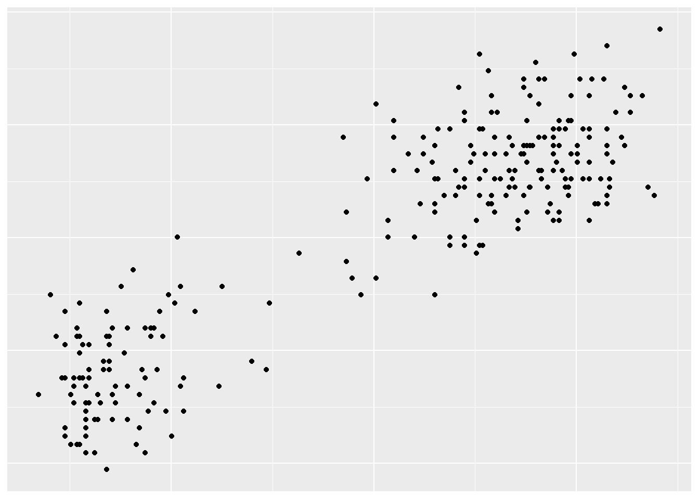
KMeans
Clustering is the grouping together of observations that share common features. The distinction between classification and clustering is that with classification, we tend to have the response variable \(y\) , that is, we already know the class to which our training data set observations \(X\) belong to. We then try to extract information from the features/predictors \(X\) to understand as to why the observations are classified as they are in \(y\). Then from this “learned” knowledge/model we try to determine what class a new observation \(X_{new}\) belongs to, carry out prediction.
For clustering, we do not have the response variable \(y\). We just have data, which seems to show some grouping structure. We then try to learn some knowledge about the data, in order to be able to group a new observation.
Suppose we have the data as shown in the image below
From the image on the left, we can note that there exists some grouping in the data. To our human eye, we can easily tell that there are 2 clusters. Given a new observation, depending how do we determine which cluster to put it in? How can we tell the computer to do the same?
We were able to claim the presence of two cluster. This is due to how the points are distanced from one another. Points close together will be grouped together. Naturally, we will pick two points which we will consider to be the center of the clusters. Then points will be clustered according to their distance to these centers. A point \((x,y)\) will be clustered to cluster 1 if its distance to the center of cluster 1 is smaller than its distance to the center of cluster 2. This can be shown in the graph below:
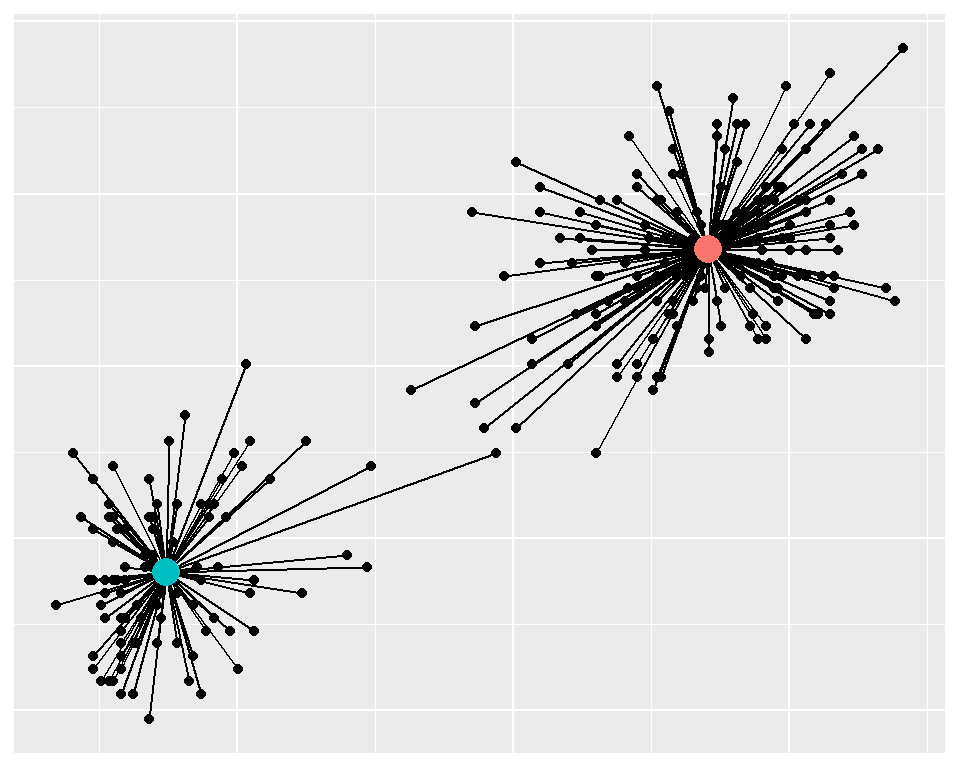
The question remains how to obtain the optimal centers. Note that we classify a point to the nearest center. Meaning all the distances obtained from an optimal clustering are minimal. The sum of all these distances will be the minimal.
Any other centers other than the optimal centers will have larger distances.
Thus to obtain the optimal grouping with\(k\) number of clusters we start from any \(k\) random centers, and we compute the distance. We cluster the points to the closest center. Then we compute the mean of the points in each cluster. These computed means become the new centers. We then compute the distances and re-cluster the points to the nearest centers and compute the means. We repeat the process until there is no change in the means. That means that the optimal grouping has been achieved.
Lets take a look at an example using the faithful dataset, assuming 2 clusters.
First we write a function that computes a distance from 1 point to the rest of the data, making use of Vectorization feature.
Example 1
distance <- function(a, b){
if(is.null(dim(b))) b <- t(b)
colSums((t(b) - c(a))^2)
}
set.seed(1)
# Scale your data
data <- scale(faithful)
# Pick two points randomly to form the two centroids:
centers <- data[sample(nrow(data), 2),]
repeat{
#compute the distances between the points and the centers:
# cluster the points and obtain new means
grp <- max.col(-apply(centers, 1, distance, data))
new_centers <- apply(data, 2, tapply, grp, mean)
# Check if the current centers is the same as the previous centers
# If so break
if(sum(abs(new_centers - centers)) < 1e-6) break
#set the previous centers to be current centers and repeat
centers <- new_centers
}
data |>
cbind(data.frame(cluster = factor(grp))) |>
ggplot(aes(eruptions, waiting, col = cluster)) +
geom_point() +
coord_fixed() +
geom_point(data = data.frame(new_centers), size = 5, color='blue')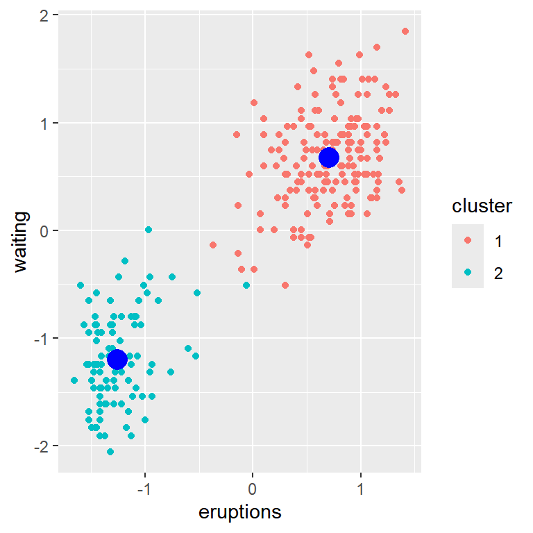
import numpy as np
import pandas as pd
from statsmodels.datasets import get_rdataset
from sklearn.preprocessing import StandardScaler
from matplotlib import pyplot as plt
np.random.seed(1)
faithful = get_rdataset('faithful').data
# Scale your data
data = StandardScaler().fit_transform(faithful)
dat = pd.DataFrame(data)
# Pick two points randomly to form the two centroids:
centers = data[np.random.choice(data.shape[0], 2)]
while True:
#compute the distances between the points and the centers,
# cluster the points
# obtain new means
grp = ((data - centers[:, None])**2).sum(2).argmin(0)
new_centers = dat.groupby(grp).mean().to_numpy()
# Check if the current centers is the same as the previous centers
# If so break
if np.abs(new_centers - centers).sum() < 1e-6: break
#set the previous centers to be current centers and repeat
centers = new_centers
faithful.plot.scatter(x='eruptions', y = 'waiting', c = np.array(['r', 'b'])[grp])
plt.show()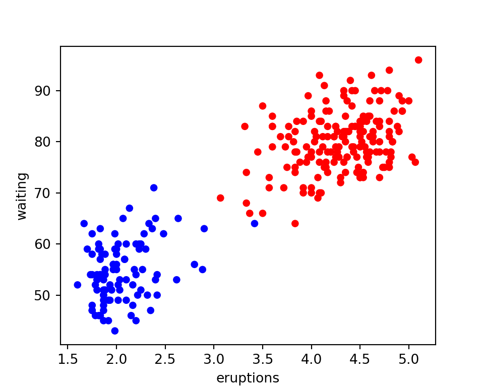
We can trace the clustering:
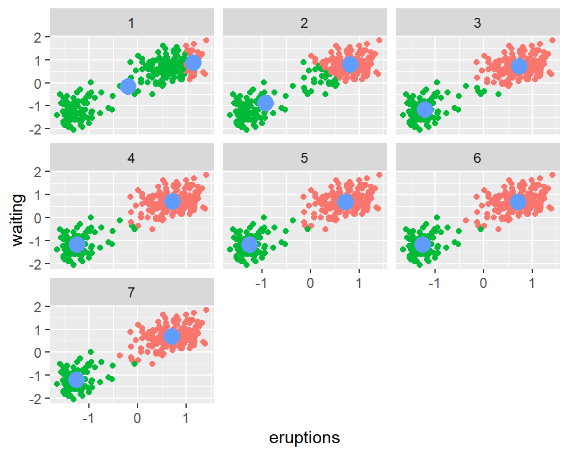
So far we have used intuition to guide in the clustering of points. Can we have a methematical formulation?
We note that this is an optimization problem, with the loss function being the total within sum of squares.
\[ \mathcal{L} = \sum_{k=1}^K\sum_{i=1}^n (x_i - \bar x_k)^2\Large{1}_{x_i\in k} \tag{1}\]
The below explanation has been adapted from cross validated
Given an \(n\) by \(p\) matrix \(X\), the algorithm seeks to group its \(n\) observations, thought of as \(p\)-vectors, into a specified number of groups, \(k\). This can be represented by an \(n\) by \(k\) matrix \(Z\) having entries in \(\{0,1\}\) and one column for each of the \(k\) groups. Column \(j\) indicates which vectors in \(X\) belong to group \(j\); that is, \(z_{ij} = 1\) if and only if observation \(i\) of \(X\) is assigned to group \(j\).
Let \(1_k\) be the column vector of \(k\) 1’s and \(1_n\) the column vector of \(n\) 1’s. \(Z\) is constrained to satisfy \(Z\ 1_k = 1_n\) reflecting the assignment of each observation of \(X\) to exactly one group.
The \(k\) by \(p\) matrix whose rows are the group centroids can be constructed as
\[{\Large{\mu}} = (Z^{\top}\ Z)^{-1} Z^\top\ X \tag{2}\]
The distances between the rows of \(X\) and their associated centroids \(A{\Large\mu}\) are
\[W = X - Z{\Large\mu} \tag{3}\]
also an \(m\) by \(n\) matrix, whence the objective function can be expressed as the number
\[\mathcal{L} = tr(W^{'}\ W) \tag{4}\]
(which is the sum of squares of the entries of \(W\)).
Note that in this case, \(tr(W^{'}\ W)\) is equivalent to \({\large{1}}_n^\top W^{\odot2}\large{1}_k\) where \(\odot\) is the element-wise operator. This is the loss function that need to be minimized. We do not have to compute this as we can stop if no point is reassigned to a different cluster.
For the distance from each element to all the centroids, we can compute it as:
\[ \begin{aligned} d_{i,k} = &(x_i - \mu_k)^\top(x_i - \mu_k)\\ =&x_i'x_i^{} - 2x_i'\mu_k + \mu_k'\mu_k \end{aligned} \tag{5}\]
We could write the function in matrix notation for all points as:
\[ D = X^{\odot2}{\large1}_p{\large1}^\top_k -2X{\Large\mu}^\top+ {\large 1}_n{\large1}_p^\top\left(U^{\odot2\top}\right) \tag{6}\]
As \(\large\mu\) is a function of \(X\) and \(Z\), we could replace it with its formula and defining \(K = XX^\top\) and \(M = (Z^\top Z)^{-1}\) we get:
\[ \begin{equation} D = \textrm{diag}(K){\large1}^\top_k - 2KZM + {\large{1}}_n\textrm{diag}(Z^\top KZMM)^\top \end{equation} \tag{7}\]
A code to depict this:
Example 2
X <- scale(faithful)
k <- 2
n <- nrow(X)
Jk <-rep(1,k)
Jn <- rep(1,n)
K <- tcrossprod(X)
grp <- sample(k, n, TRUE) #start with random groupings
repeat{
Z <- diag(k)[grp,]
M <- solve(crossprod(Z))
A <- K%*%Z%*%M
D <- diag(K)%*%t(Jk) - 2*A+ Jn%*%t(diag(t(Z)%*%A%*%M))
new_grp <- max.col(-D)
if(mean(new_grp == grp) == 1)break
grp <- new_grp
}
data.frame(faithful, cluster = factor(new_grp)) |>
ggplot(aes(eruptions, waiting, col = cluster)) +
geom_point()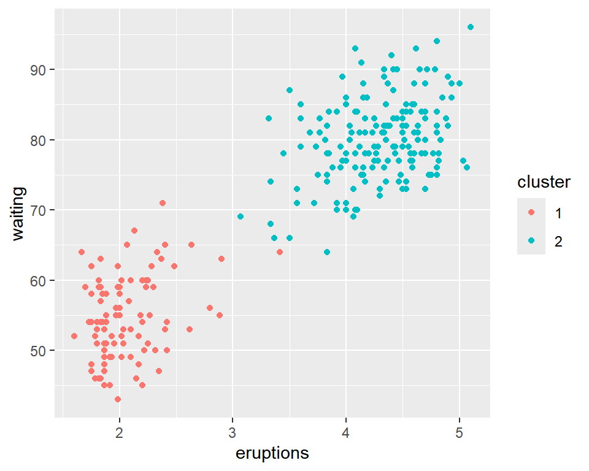
np.random.seed(1)
faithful = get_rdataset('faithful').data
# Scale your data
X = StandardScaler().fit_transform(faithful)
k = 2
n = X.shape[0]
Jk = np.ones((k, 1))
Jn = np.ones((n,1))
K = X @ X.T
grp = np.random.choice(k, n) #start with random groupings
while True:
Z = np.identity(k)[grp]
M = np.linalg.inv(Z.T @ Z)
A = K @ Z @ M
D = np.diag(K)[:,None] - 2 * A + np.diag(Z.T @ A @ M)
new_grp = D.argmin(1)
if np.mean(new_grp == grp) == 1: break
grp = new_grp
faithful.plot.scatter(x='eruptions', y = 'waiting', c = np.array(['r', 'b'])[grp])
plt.show()
plt.close()Writing the distance in the matrix notation enables one to easily use different functions on \(X\).
We just change \(K\) and still use the same formula.
Example 3:
Assume we have data like shown below:
n <- 50
k <- 2
X <- cbind(runif(n,-4,4), sample(c(-1,1), n, TRUE))
ggplot(data.frame(X, col = factor(kmeans(X,k)$cluster)))+
geom_point(aes(X1,X2, col=col))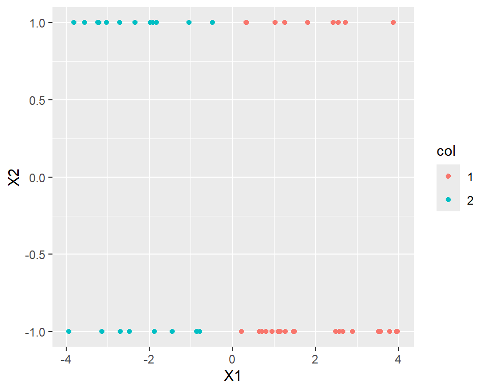
from sklearn.cluster import k_means
n = 50
k = 2
X = np.c_[np.random.rand(n,1)*8-4, np.random.choice([-1,1], n)]
plt.scatter(X[:,0] ,X[:,1], color=np.array(['b', 'r'])[k_means(X,k, n_init='auto')[1]])
plt.show()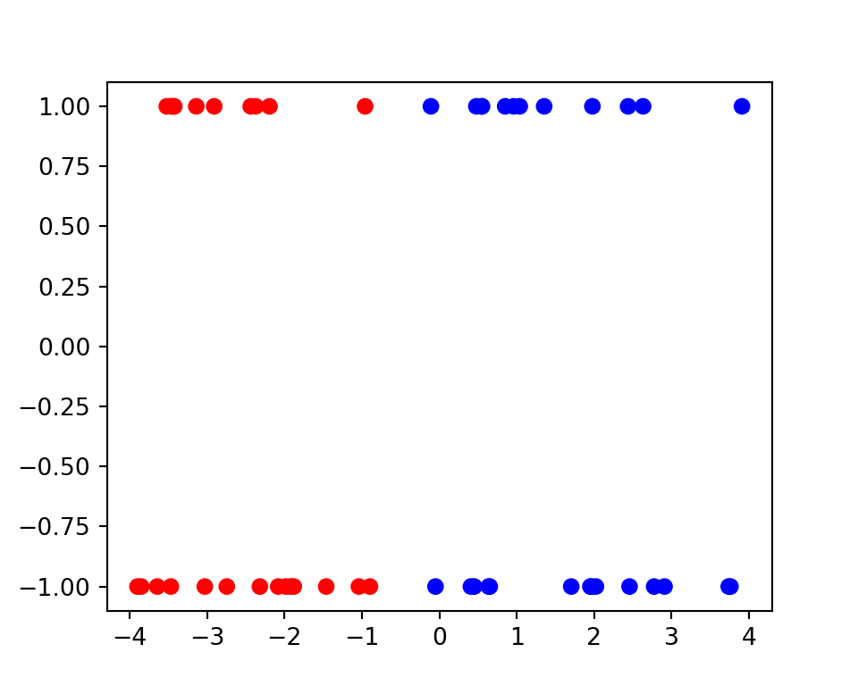
plt.close()The native K-means is unable to cluster the data accordingly.
Its not quite simple on how to separate the data. Suppose we transform the data above to a 3D. ie add one dimension. we get the following:
r <- runif(nrow(X))
X1 <- cbind(r, X)
#initial design with added dimension:
scatterplot3d::scatterplot3d(X1, pch=16)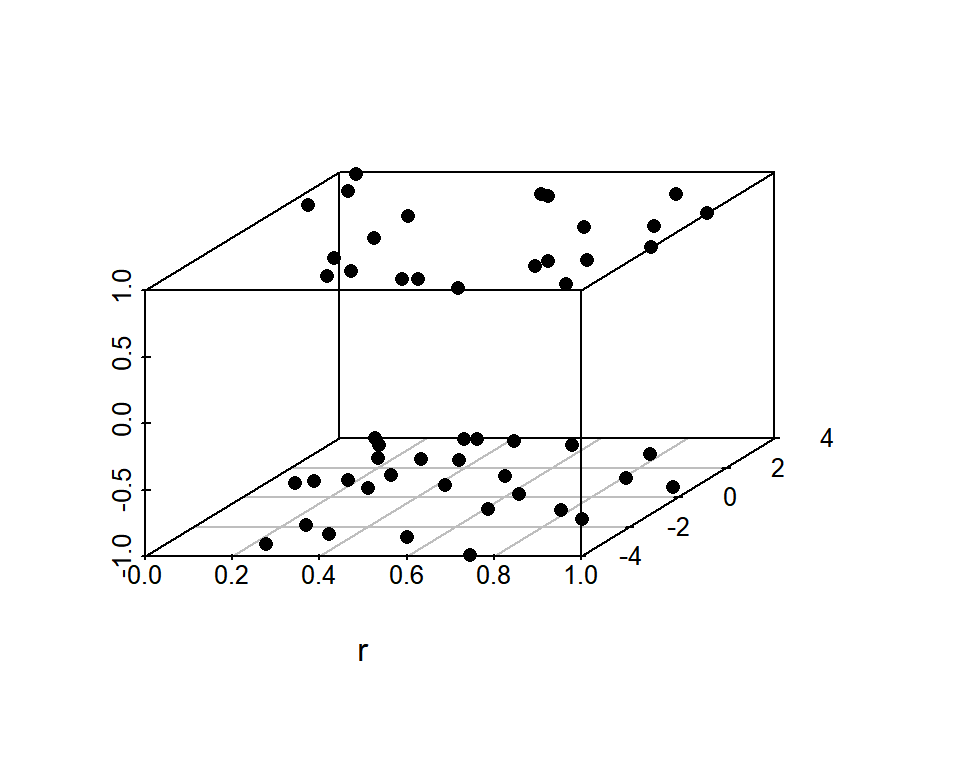
r = np.random.rand(X.shape[0])
ax = plt.axes(projection='3d')
ax.scatter(r, X[:,0], X[:,1]);
ax.view_init(10, 45)
plt.show()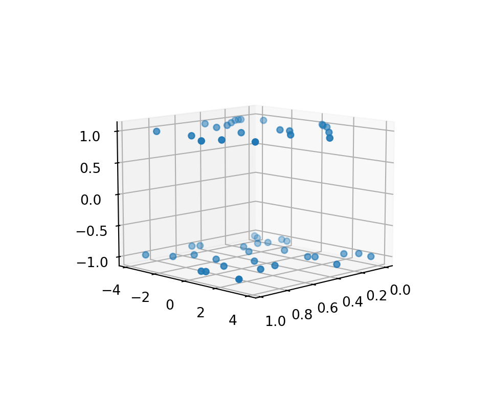
We can clearly see that the data points lie on two planes, thereby they should be distinct. Assume the centroids were at the center of the planes, notice how in some instances, the distance to a point directly below/above a centroid, might be smaller in comparison to the distance of a point to the centroid within the same plane. This will make points from different planes to be grouped together. To avoid this, we may increase the height by a factor equal to the maximum of the width. ie 4. This ensures that points on different planes will be far from each other compared to points on the same plane. We thus get the plot below:
X2 <- cbind(r, X[,1], 4*X[,2]) # [r, x1, 4*x2]
scatterplot3d::scatterplot3d(X2, pch=16, color=kmeans(X2, 2)$cluster)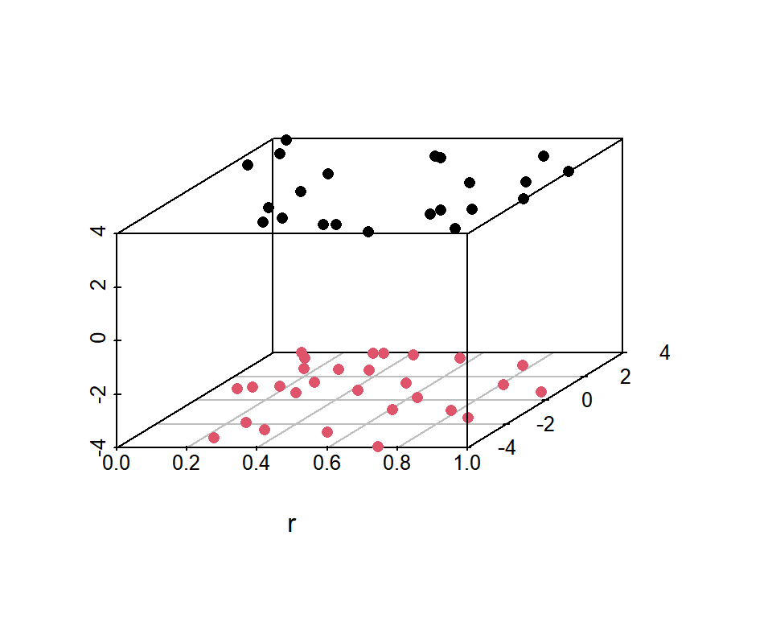
ax = plt.axes(projection='3d')
X2 = np.c_[r,X[:,0], 4*X[:,1]]
ax.scatter(r,X[:,0],X[:,1],c=np.array(['r','b'])[k_means(X2,2,n_init='auto')[1]]);D:\Programs\Anaconda\Lib\site-packages\sklearn\cluster\_kmeans.py:1382: UserWarning: KMeans is known to have a memory leak on Windows with MKL, when there are less chunks than available threads. You can avoid it by setting the environment variable OMP_NUM_THREADS=1.
warnings.warn(ax.view_init(10, 45)
plt.show()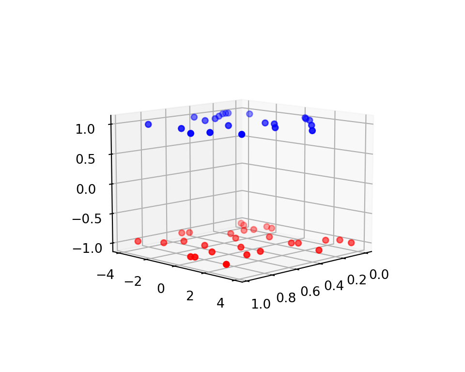
Notice how using the transformed data, we were able to separate the data points into their respective clusters. We still used the native kmeans algorithm to cluster the points although we first had to transform the points. The notion of transformation enables us to make use of kernels, thereby being able to separate data that at first seems inseparable. Think of a kernel as a function that maps two two transformed inputs into one value. The inputs can be scalar or vector values. For instance, in our example above, the kernel can be thought of as being
\[ \begin{aligned} &\begin{array}{}K(x,y) &= [x_{1}, 4x_2]^\top[y_1,4y_2]\\ &=x_1y_1 + 4x_2y_2\\ &=x'A'Ay=x'By \end{array}\quad\quad\text{where}\quad A = \begin{pmatrix}1&0\\0&4\end{pmatrix}\text{ and } B=\begin{pmatrix}1&0\\0&16\end{pmatrix}\\ \\ \implies&K(X) = XBX^\top \end{aligned} \tag{8}\]
All kernels are inner products of the transformed values/vectors. In the above example, the transformation function considered was \(f(x) = Ax\). By using a function on \(X\), we can be able to separate the data: Let \(\phi(x,y)\) be the transformation function we could then do
\[ \begin{aligned} K(x_i,x_j) = &\left\langle \phi(x_i), \phi(x_j)\right\rangle\\ \text{Thus for the whole }& \text{dataset we have}\\ K =& \phi(X)\phi(X)^\top \end{aligned} \tag{9}\]
Since the kernel is an inner product, we do not need to know the explicit form of the transformation function. We just need to obtain the kernel results, and using the this, we can cluster the data.
Back to the example: Using everything as previously stated, kernel, we get the following:
Example 3 continuation
k <- 2
n <- nrow(X)
Jk <- rep(1,k)
Jn <- rep(1,n)
B <- matrix(c(1,0,0,16), 2)
K <- X %*% B%*% t(X)
grp <- sample(k, n, TRUE) #start with random groupings
repeat{
Z <- diag(k)[grp,]
M <- solve(crossprod(Z))
A <- K%*%Z%*%M
D <- diag(K)%*%t(Jk) - 2*A+ Jn%*%t(diag(t(Z)%*%A%*%M))
new_grp <- max.col(-D)
if(mean(new_grp == grp) == 1)break
grp <- new_grp
}
ggplot(data.frame(X, col = factor(new_grp)))+
geom_point(aes(X1,X2, col=col))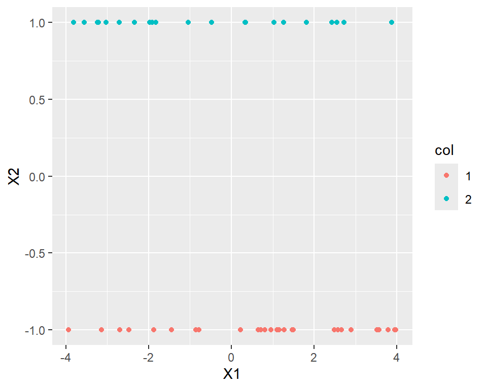
k = 2
n = X.shape[0]
Jk = np.ones((k,1))
Jn = np.ones((n,1))
B = np.array([[1,0],[0,16]])
K = X @ B @ X.T
grp = np.random.choice(k, n) #start with random groupings
while True:
Z = np.identity(k)[grp]
M = np.linalg.inv(Z.T @ Z)
A = K @ Z @ M
D = np.diag(K)[:,None]@Jk.T - 2 * A + Jn @ np.diag(Z.T @ A @ M)[:,None].T
new_grp = D.argmin(1)
if (new_grp == grp).mean() == 1: break
grp = new_grp
plt.scatter(X[:,0], X[:,1], c=np.array(['b','r'])[new_grp])
plt.show()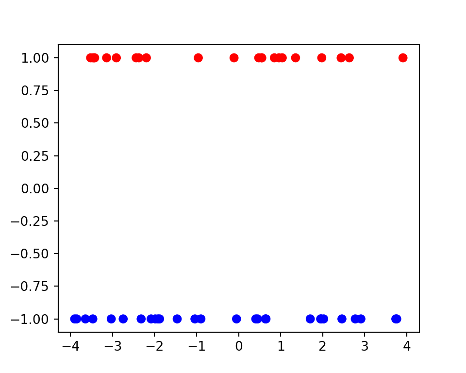
Note that kernels depict the relationship between one point to another. Thus are also referred to as correlation functions. Some common kernel] include:
Gaussian \(\exp\left(-(x_i-x_j)^2\right)\)
Mat ́ern,
power-exponential family \(\exp\left(-\big|x_i-x_j\big|^p\right)\) . If \(p=2\) we get the gaussian kernel
Mostly the gaussian is used. We could write a function that does kernelized k-means:
kernelized_kmeans <- function(K, k){
n <- nrow(K)
Jk <- rep(1, k)
Jn <- rep(1, n)
grp <- sample(k, n, TRUE) #start with random groupings
I <- diag(k)
repeat{
Z <- I[grp,]
M <- solve(crossprod(Z))
A <- K%*%Z%*%M
D <- diag(K) - 2*A + Jn%*%t(diag(t(Z)%*%A%*%M))
new_grp <- max.col(-D)
if(mean(new_grp == grp) == 1)break
grp <- new_grp
}
new_grp
}def kernelized_kmeans(K, k):
grp = np.random.choice(k, K.shape[0]) #start with random groupings
I = np.identity(k)
while True:
Z = I[grp]
M = np.linalg.inv(Z.T @ Z)
A = K @ Z @ M
new_grp = (np.diag(K)[:,None] - 2 * A + np.diag(Z.T @ A @ M)).argmin(1)
if (new_grp == grp).mean() == 1: break
grp = new_grp
return new_grpAll we have to do is pass in the kernel and the number of clusters.
Example 4.
Using gaussian kernel, cluster the data below:
n <- 500
k <- 2
lower <- seq(0,k-1) * 5 #5 is the distance between the data
theta <- rep(runif(n, 0, 2*pi), each = k)
r <- runif(n*k, lower,lower + 1)
X <- cbind(x = r * cos(theta), y = r * sin(theta))
d <- data.frame(cbind(X, X),
col = c(factor(numeric(n*k)), factor(kmeans(X, k)$cluster)),
ty =c(' Unclustered', 'Clustered using Kmeans')[gl(2,n*k)])
ggplot(d, aes(x, y, col=col))+
geom_point() +coord_fixed()+
scale_color_manual(values=c("grey40", scales::hue_pal()(k)))+
facet_wrap(~ty)+
theme(legend.position = "none")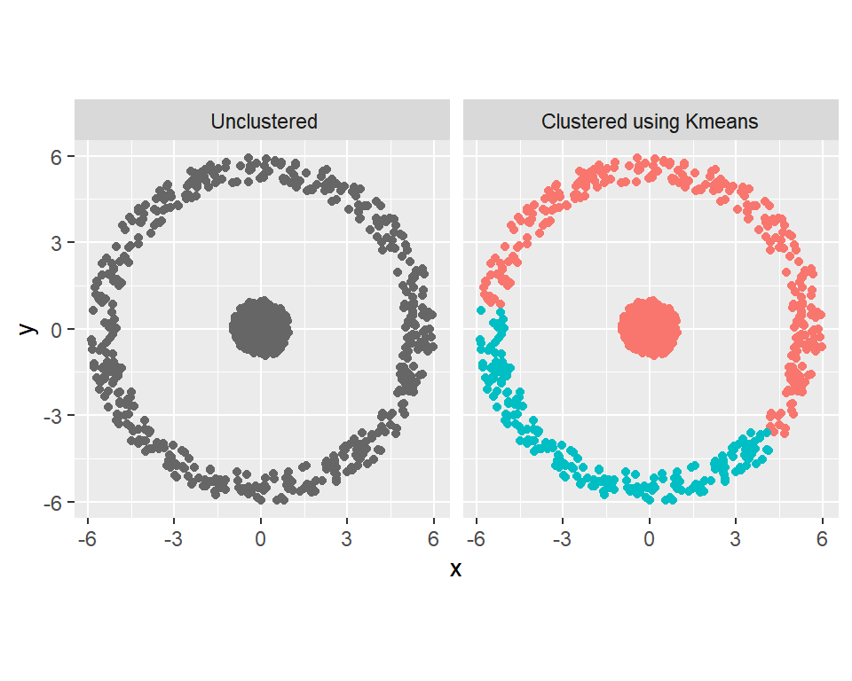
np.random.seed(1)
n = 500;
k = 2
lower = np.arange(0, k)*5
theta = np.repeat(np.random.rand(n)*2*np.pi, k)
r = (np.random.rand(n,k) + lower).ravel()
X = np.c_[r * np.cos(theta), r * np.sin(theta)]
cluster = k_means(X,k, n_init='auto')[1].astype(int)D:\Programs\Anaconda\Lib\site-packages\sklearn\cluster\_kmeans.py:1382: UserWarning: KMeans is known to have a memory leak on Windows with MKL, when there are less chunks than available threads. You can avoid it by setting the environment variable OMP_NUM_THREADS=4.
warnings.warn(_, axs = plt.subplots(1, 2, figsize=(20,10))
axs[0].scatter(X[:,0], X[:,1])
axs[0].set_box_aspect(1)
axs[1].scatter(X[:,0], X[:,1], c = np.array(['r', 'b'])[cluster])
axs[1].set_box_aspect(1)
plt.show()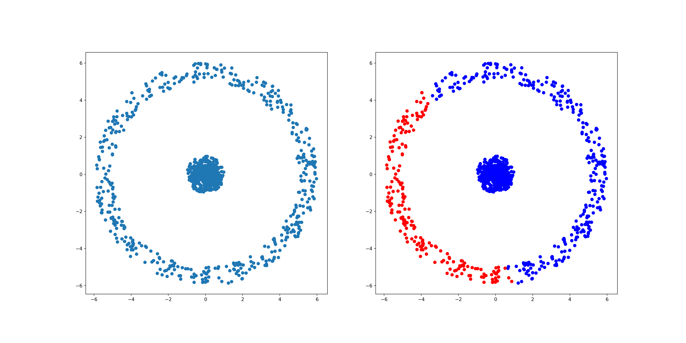
Results using kernelized k-means
grp <- kernelized_kmeans(as.matrix(exp(-dist(X))), k)
ggplot(data.frame(X, cluster = factor(grp))) +
geom_point(aes(x, y, col = cluster)) +coord_fixed()+
theme(legend.position = 'none')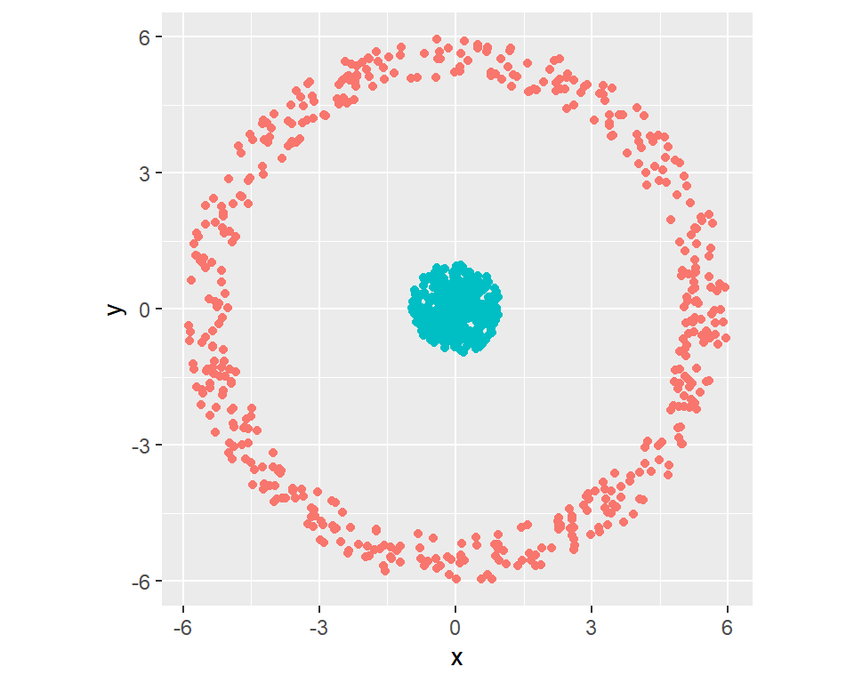
from scipy.spatial.distance import cdist
grp = kernelized_kmeans(np.exp(-cdist(X,X)), k)
a = plt.scatter(X[:,0], X[:,1], c=np.array(['r', 'b'])[grp])
plt.gca().set_aspect('equal')
plt.show()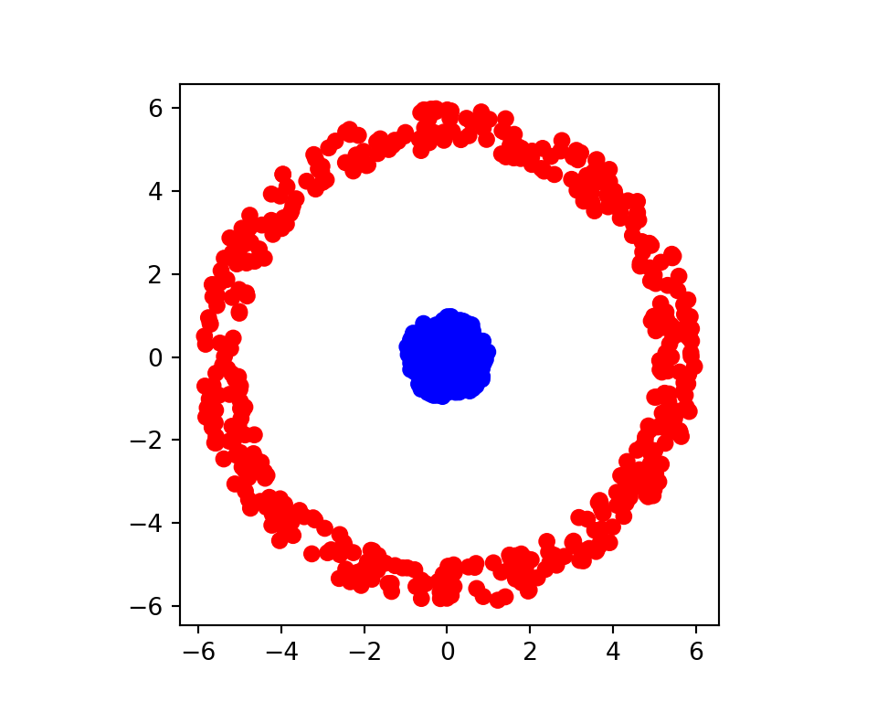
Sometimes, instead of increasing the dimension, we transform such that the dimension is reduced before we carry out k-means. For example, in the data shown, we could easily cluster using radius from the origin. There is no need of kernel. ie \(r^2 = x^2+y^2\)
Example 5
set.seed(1)
n <- 300; k<- 4
lower <- seq(0, by=0.1, length = k)#5 is the distance between the data
theta <- rep(runif(n, 0, 2*pi), each = k)
r <- runif(n*k, lower,lower + 0.01)
X <- cbind(x = r * cos(theta), y = r * sin(theta))
ggplot(data.frame(X, cluster =
factor(kmeans(rowSums(X^2), lower^2)$cluster)),
aes(x, y, col = cluster)) +
geom_point() +coord_fixed()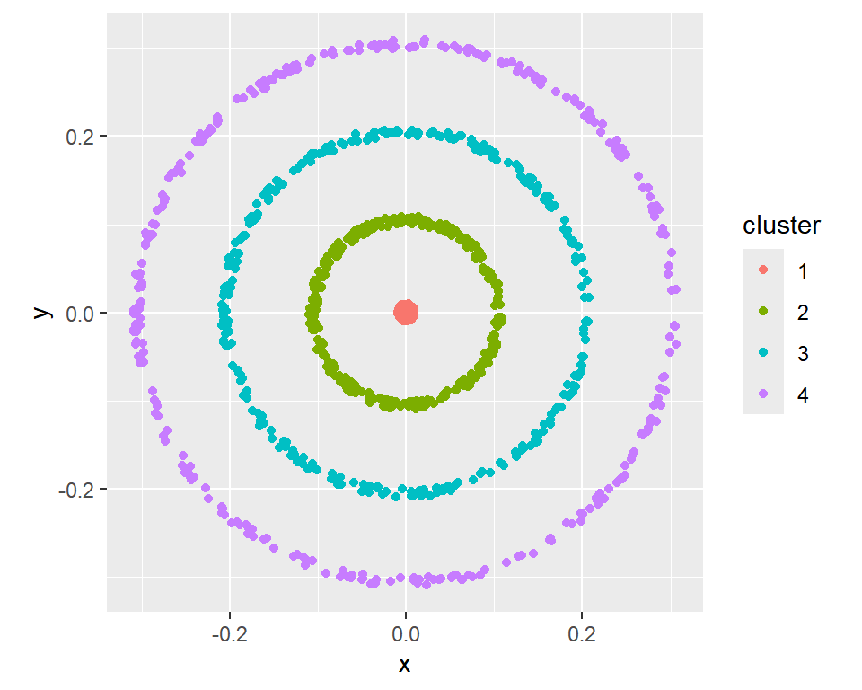
np.random.seed(1)
n = 300; k = 4
lower = np.arange(0, 0.1*k, 0.1)
theta = np.repeat(np.random.rand(n)*2*np.pi,k)
r = (np.random.rand(n,k)*0.01 + lower).ravel()
X = np.c_[r * np.cos(theta), r * np.sin(theta)]
cluster = k_means((X**2).sum(1).reshape(-1,1),k, n_init='auto')[1].astype(int)
a = plt.scatter(X[:,0], X[:,1], c=np.array(['g', 'b', 'r', 'y'])[cluster])
plt.gca().set_aspect('equal')
plt.show()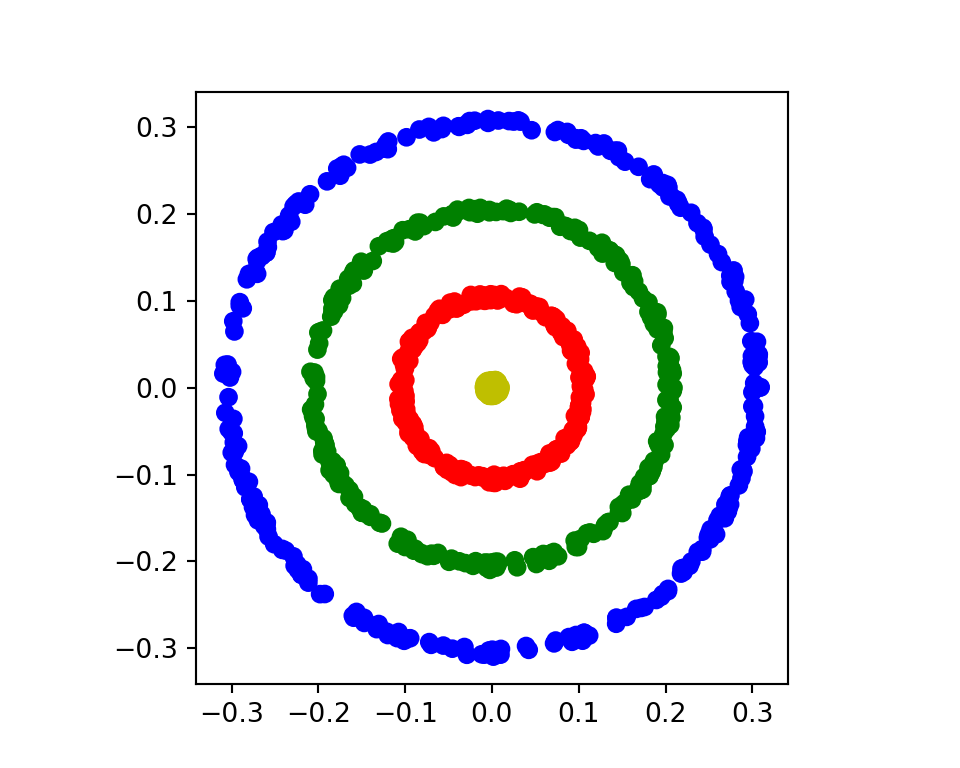
Using inbuilt Code
We could use the inbuilt functions to run kmeans instead of writing the code from scratch. Below are the functions to use:
Use the kmeans function. There are different algorithms implemented.
res = kmeans(scale(faithful), 2)
data.frame(faithful, cluster = factor(res$cluster))|>
ggplot(aes(eruptions, waiting, col=cluster))+ geom_point()
from sklearn.cluster import KMeans, k_means
scaled_dat = StandardScaler().fit_transform(faithful)
centers, cluster, SSW = k_means(scaled_dat, 2, n_init = 'auto')
faithful.plot.scatter(x='eruptions', y = 'waiting',c = np.array(['r', 'b'])[cluster])
plt.show()
We could use KMeans class instead which will enable us do prediction, compute score etc
results = KMeans(2, n_init='auto').fit(scaled_dat)
results.cluster_centers_
results.labels_[:5] # first 5 labels
results.predict([[0,0], [-1,-1]]) # predict cluster for new points
results.transform([[0,0],[-1,-1]])# Distances to the centroidsOther values obtained from the results include SSW(Within Sum of Squares), SSB(Between Sum of Squares) and SST(Total Sum of Squares). These can directly be computed as shown below:
\[ \begin{aligned} SSW =& ~~ tr(W'W) \quad\quad \text{as shown in equation 4}\\ SSB =& \begin{array}{}\sum_{k}^Kn_k\sum_{j}^{p}(\bar x_{jk} - \bar x_{j.})^2&\text{where }\begin{array}{}n_k = \text{number of elements in cluster k}\\\bar x_{jk}=\text{mean for variable j in cluster k}\\\bar x_{j.} = \text{Mean for variable x}\end{array}\end{array}\\ =&\left(\frac{1}{n}{\large1}_k{\large1}_n'X - {\large\mu}\right)^{\odot 2}{\large1}_pZ'{\large1}_n\\ =&tr(X'B'Z'ZBX)\quad\text{where }B = \left(\frac{1}{n}{\large1}_k{\large1}_n' - (Z'Z)^{-1}Z'\right) \\ SST =& X'\left(I_n - \frac{1}{n}{\large1}_n{\large1}_n'\right)X\\ & = SSW + SSB \end{aligned} \]